The calibration stage establishes a consistent geometric description of the camera used for all subsequent
experiments. A printed 8×11 ChArUco board is captured from many viewpoints in a dedicated sequence. For each
image, the system detects the chessboard corners and embedded ArUco markers, refines their locations to
subpixel accuracy, and associates them with known 3D coordinates on the board. These 2D–3D correspondences are
passed to a standard calibration routine that jointly estimates the intrinsic matrix, lens distortion
coefficients, and per-image extrinsic poses. Outlier views with large reprojection error are discarded, and the
remaining set is used to compute a final set of intrinsics that closely match the physical camera.
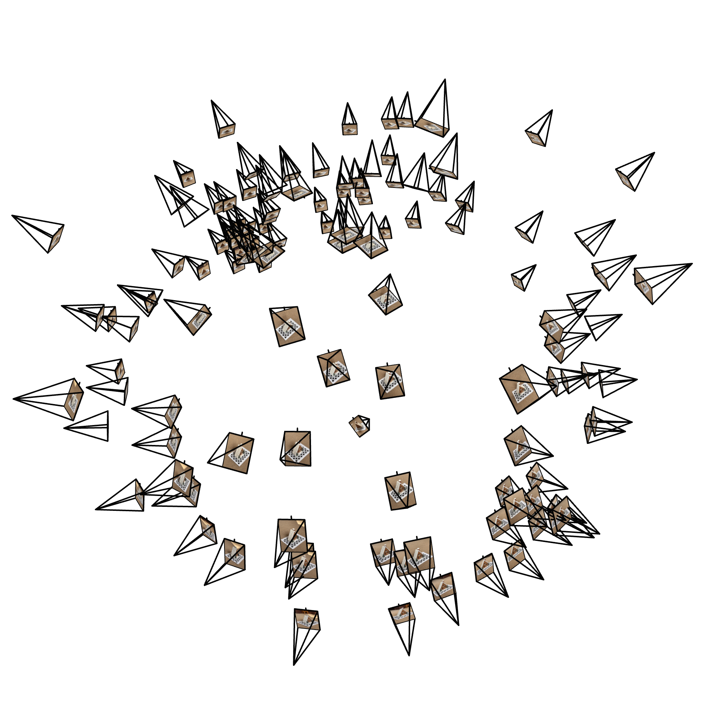
View 1 — global layout of camera poses.
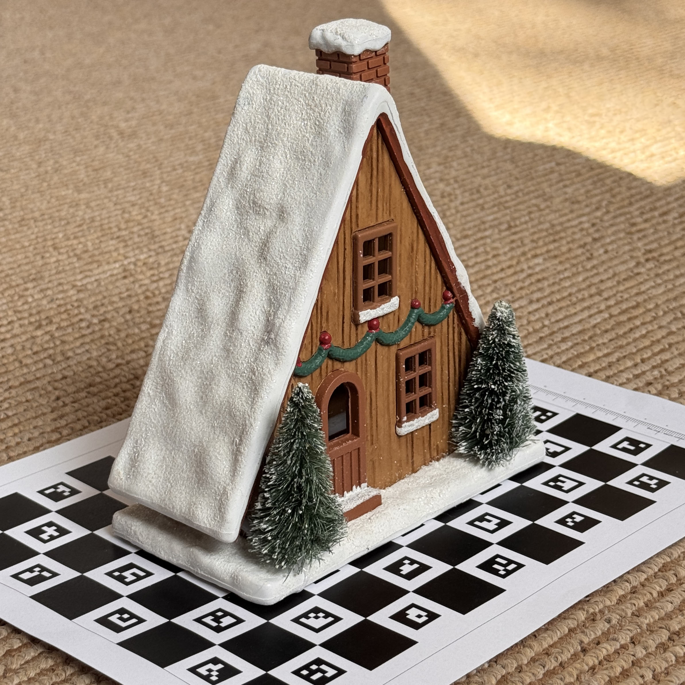
Reconstructed object scan from the calibrated multi-view sequence.
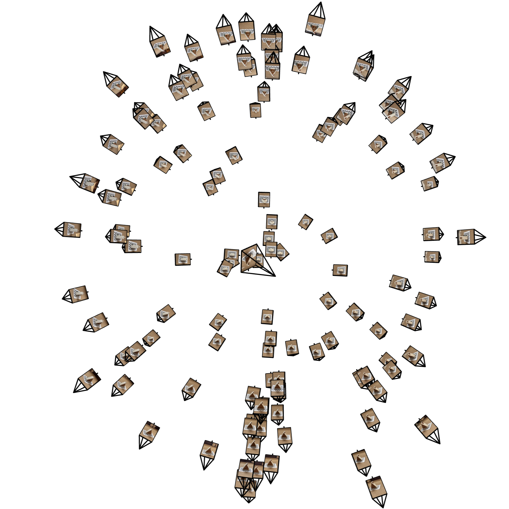
View 2 — looking up from the z-axis, highlighting coverage and elevation changes.
Once the camera model is fixed, the ChArUco board doubles as a world-coordinate reference for the 3D scanning
sequence. Each photograph of the ceramic house on the board is undistorted with the recovered lens parameters,
and the same corner and marker detections are used to solve for a rigid transform from camera space to board
space. These transforms are then interpreted as camera-to-world matrices and stored alongside the images in a
compact calibration file. Visualising the resulting frustums reveals a dense ring of cameras around the object
with varying elevation and azimuth, providing good coverage for volumetric reconstruction and novel-view
synthesis.
Varying Encoding Frequency
To visualise how positional encoding transforms image coordinates, each PE(u,v) vector is projected onto its top
three PCA components while the maximum encoding frequency L is varied. For very low frequency (L = 1), the
encoded PE(u,v) vectors occupy a single smooth, bowl-shaped surface in the top three principal components. The
colour gradient from red to green along this surface shows that the first two principal components remain almost
linear in u and v, so the encoding behaves like a gently curved embedding of the image plane with no folds:
nearby pixels in image coordinates remain nearby in feature space. At this end of the spectrum, the positional
encoding acts as a smooth reparameterisation of the image domain rather than introducing strong local
distortions.
At mid-range frequencies (L = 8 and L = 12), the PCA manifolds develop a clear multi-layered structure. The
points no longer sit on a single simple bowl but instead trace out sheets that have been folded or partially
rolled, with regions of the grid mapped to different heights in PC3 even when their PC1 and PC2 coordinates
nearly coincide. The colour gradients remain ordered, indicating that the embedding still respects global
position, but pixels that are adjacent along one coordinate can now separate along the third principal component
whenever the corresponding sine and cosine terms shift phase. In effect, mid-frequency encodings preserve a
coherent global parameterisation while deliberately stretching and shearing local neighbourhoods, which makes it
easier for a finite-depth ReLU network to represent edges and moderate-frequency texture.
At high frequency (L = 16 and especially L = 24), the PCA geometry becomes highly oscillatory. Instead of a
single surface or gently folded ribbon, the points fill a dense volume of overlapping bands and sheets that
weave through one another. The UV-coloured plots reveal thin strands of similar colour that separate and rejoin
throughout this space, indicating that many small regions of the original image are now mapped to almost
orthogonal directions in the encoded feature space. Small changes in u or v trigger large swings in the
sinusoids at high L, so neighbouring pixels cycle through different basis directions in rapid succession. This
is precisely the regime positional encoding is designed to create: the MLP gains access to very fine spatial
detail by decorrelating local neighbourhoods, at the cost of a tangled, high-dimensional manifold that is
difficult to interpret visually but extremely expressive for function fitting.
Varying Widths
Changing the hidden width mainly affects the geometry of the learned feature space rather than the raw
positional-encoding manifold. The PCA plots of PE(u,v) remain essentially unchanged between the narrow and wide
networks, since both receive the same sinusoidal expansion of the image coordinates; the encoded points still
occupy a dense, roughly cubic volume whose principal components are strongly aligned with u and v. The contrast
appears in the PCA of the penultimate activations. With a smaller width, the distribution forms a relatively
thick fan-shaped cloud in which luminance, colour, and spatial location remain partially entangled across
several principal directions. Increasing the width produces a much more anisotropic embedding: most variance
collapses onto a dominant one-dimensional arc, with secondary components only modulating fine local deviations.
A wider network therefore spends its extra capacity organising features along a small number of semantically
meaningful directions rather than expanding the raw PE manifold itself.
PE • RGB (lr = 1e-2)PE • UV (layer depth = 8)Penultimate • RGB (iterations = 256)
The belts of intermediate fox reconstructions illustrate how these different embeddings translate into learning
dynamics. Both widths rapidly recover the coarse outline and average colours of the image, but the narrow model
retains visible banding and oversmoothed regions even after many iterations, while the wider model continues to
refine shadows, whiskers, and background texture. This behaviour is consistent with the PCA observations: when
the penultimate layer collapses most variance onto a single direction, optimisation can follow a relatively
simple trajectory that first explains global structure and then walks along the arc to capture increasingly fine
detail. The wider network therefore converges to sharper solutions under the same training schedule, not because
the positional encoding changed, but because the final layers have more room to carve out an appearance-aligned
feature space.
Final Reconstruction on Chosen Scene
As a concrete example, the same 2D neural field architecture is trained on a single natural image of Jupiter
using a maximum encoding frequency of L = 16 and a hidden width of 256. The PSNR curve below tracks full-image
PSNR throughout optimisation, and the conveyor belt of renderings shows how the reconstruction evolves over
time. Early iterations capture only coarse colour and band structure; mid-training snapshots then recover the
major storms and cloud belts, and the final image closely matches the ground-truth photograph while still
smoothing the tiniest turbulent eddies. This experiment serves as the designated “image of choice” for the 2D
neural field and provides a reference point for interpreting the PCA plots and PSNR curves shown alongside.
PE • UV (top three principal components)PE • RGB (top three principal components)Penultimate • RGB (learned feature geometry)
The PCA of the penultimate features tells a very different story.
After passing through the MLP, the encoded points are no longer filling a symmetric three-sheet volume; instead,
they collapse into a highly elongated plume concentrated near one side of PC space, with most variance lying
along a single direction.
Points corresponding to bright clouds, blue storms, and the dark background are separated along this main axis,
while the secondary axes make only small corrections.
This pattern indicates that the network has reorganized the high-dimensional PE basis into a much more compact,
appearance-aligned representation in which luminance and large-scale color structure are encoded by one dominant
feature dimension, and finer chromatic and textural differences are stored in orthogonal directions.
In other words, the penultimate layer behaves like a learned color-space tailored to the Jupiter image rather
than a direct reflection of the original (u,v) coordinates.
Ground-truth view (input photograph)Batch PSNR over training iterationsFinal NeRF reconstruction (e.g., 5k iters, L = 16, width = 256)
Taken together, the PCA plots and PSNR curves describe a consistent progression from coordinate-driven to
appearance-driven representation. The PCA of PE features coloured by UV shows that the raw positional encodings
still form a regular three-sheet manifold whose principal components remain aligned with approximate latitude
and longitude on the sphere. When the same points are coloured by RGB instead of UV, the colours spread almost
uniformly throughout this volume, confirming that the encoding at this stage is dominated by oscillatory
coordinate structure rather than any semantic grouping by appearance. Only after passing through the MLP do the
points collapse into the elongated plume seen in the penultimate PCA, where a single dominant direction
separates bright clouds, blue storms, and dark background. The rising PSNR curve mirrors this reorganisation:
rapid gains in the first iterations reflect the network discovering a compact, appearance-aligned feature axis,
while the slower tail corresponds to fine adjustments along that axis that recover small-scale atmospheric
detail.
NeRF Pipeline
The first stage of the pipeline translates image pixels into rays in 3D space.
For each training step, a batch of pixel locations is drawn from the current set of images.
Instead of treating each pixel in isolation, the implementation works entirely in batches so that thousands of
rays can be computed in one vectorized pass on the GPU.
For every pixel, its horizontal and vertical coordinates are first shifted so that they are measured relative to
the center of the image; this ensures that a pixel exactly in the middle of the frame produces a ray pointing
straight through the optical axis rather than being biased by the top-left origin of image coordinates.
These centered coordinates are then divided by the focal length to convert them into directions in the camera’s
local coordinate system, following the standard pinhole-camera model in which the focal length controls the
spread of rays.
Each camera in the training set is described by a rigid transform from camera space to world space; for every
ray in the batch, the implementation looks up the corresponding camera’s rotation and translation and uses them
to rotate the local direction into the global reference frame while placing the ray’s origin at the camera
center.
Finally, all directions are normalized to unit length so that subsequent sampling along the ray can be expressed
purely in terms of distances from the camera.
The result of this stage is a batch of ray origins and matching direction vectors that describe exactly which 3D
lines will be probed in the volume.
All calibrated camera frustums around the Lego scene.Random training rays emitted from one camera in world space.Stratified sample points along each ray, ready for NeRF evaluation.
Once the rays exist in world space, the next stage chooses where along each ray to query the neural field.
The implementation uses a stratified scheme: it begins by placing a fixed number of sample depths between a near
and a far bound that cover the region where the scene is expected to lie.
Instead of always using the same depth values, each interval between two neighboring depths is randomly jittered
on every training iteration.
This produces slightly different sampling positions from step to step, which reduces aliasing artifacts and
encourages the learned density field to be smooth rather than fitting to a rigid grid of points.
For each ray, these scalar depths are then converted into 3D sample locations by adding the origin plus the
direction vector scaled by each depth value.
The outcome of this stage is a dense batch of points in space, all organized per ray, ready to be evaluated by
the neural network.
The Lego experiments use a standard NeRF-style multilayer perceptron that takes 3D positions and viewing
directions as input and outputs a volume density and RGB colour for each queried point. Both inputs are first
mapped through sinusoidal positional encodings—ten frequency bands for positions and four for directions—and
then passed through an eight-layer fully connected network of width 256 with ReLU activations and a final
linear output layer. Training uses the Adam optimiser with a learning rate of 5×10−4, drawing 64
stratified samples along each ray for 10 000 iterations. The PSNR curve and final train/validation views
above report reconstruction quality on held-out views and show that the model converges to a sharp,
view-consistent representation of the Lego scene.
PSNR over training iterations (Lego 200×200)Final NeRF reconstruction of a training view (iteration 10 000)Final NeRF reconstruction of a held-out validation view
Feeding data into this process is handled by a streaming dataset tailored to NeRF’s requirements.
When training begins, the dataset loader reads a compact file that contains the entire scene: a stack of RGB
images, the corresponding camera-to-world transforms, and a shared focal length consistent with the resolution
of those images.
Rather than iterating over the images in a fixed order, the loader behaves like an infinite stream: each time
the trainer asks for a new batch, it randomly chooses image indices and pixel coordinates, effectively sampling
rays uniformly across all views and across the whole image plane.
For every sampled triplet of (image index, horizontal pixel, vertical pixel), the loader immediately retrieves
the true color at that pixel from the preloaded image tensor and retrieves the pose of the camera that observed
it.
It then passes these sampled image coordinates and camera transforms to the ray-generation stage, which produces
the matching ray origins and directions.
In this way, each training batch consists of a large set of randomly selected rays and their ground-truth RGB
values, allowing the network to gradually see all viewpoints and all parts of the scene over the course of
training without ever needing to materialize the entire ray bundle in memory at once.
NeRF orbit of the reconstructed scene (10k iterations), illustrating the full pipeline in motion.
Training on a Real-World Scene
To assess how the reconstruction pipeline behaves on real imagery, the target is a small ceramic
house placed on an 8×11 ChArUco board and viewed from 91 handheld positions around the object. Camera intrinsics
are estimated once using a dedicated calibration sequence; for the NeRF training set, each photograph is
undistorted, its pose is recovered from the detected fiducial markers, and the resulting images are resampled to
a resolution of 200×200 pixels. The calibrated camera poses are expressed as rigid transforms from camera to
world coordinates and partitioned into 91 training views, 15 validation views, and a small set of test
viewpoints reserved for novel-view evaluation. The radiance field is represented by a standard multi-layer
perceptron of depth eight and width 256, with a skip connection that re-injects the input coordinates halfway
through the network. Three-dimensional positions are encoded with a sinusoidal positional encoding using ten
frequency bands, and viewing directions are encoded with four bands. Training proceeds by sampling thousands of
rays per iteration uniformly over the training images and optimising the network with Adam, starting from a
learning rate of 5×10−4 and following a cosine decay schedule over 10 000 iterations so that
early updates correct coarse geometry while later stages focus on fine-scale appearance.
Along each ray, a fixed number of points are drawn from a depth interval that brackets the physical extent of
the house and calibration board (approximately 0.44 to 0.98 units in the calibrated frame). For each batch, the
network predicts densities and view-dependent colours at these samples, which are then combined through
volumetric integration to form final pixel intensities. The discrepancy between rendered and observed colours is
measured with a mean-squared-error objective. Optimising for 10 000 iterations produces a characteristic
two-phase learning curve. PSNR jumps from roughly 5 dB to around 18 dB within the first thousand
iterations as the model discovers the dominant colour distribution and coarse geometry, then increases more
slowly, reaching about 22.5 dB by 5 000 iterations and stabilising near 23 dB by the end of
training. The corresponding loss curve decreases smoothly from roughly 0.32 to about 5×10−3 without
noticeable oscillation, indicating a stable optimisation process and no strong signs of over-fitting despite
the modest number of views.
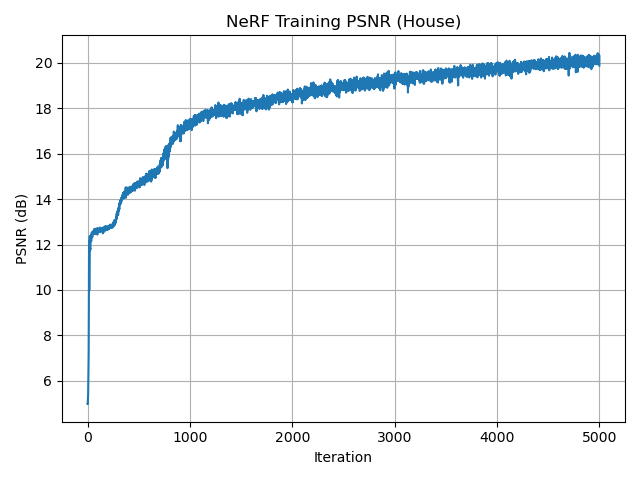
PSNR (5k iterations, lr = 5e-4, 64 samples/ray).
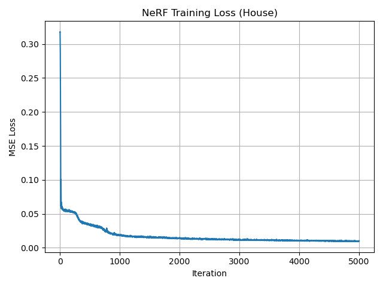
Loss Function (width = 256, depth = 8)Held-out validation view (near = 0.35, far = 1.0).
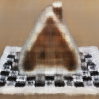
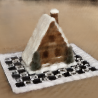
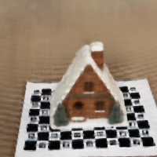
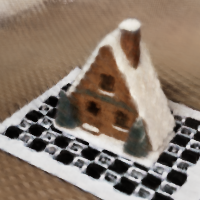
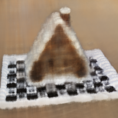
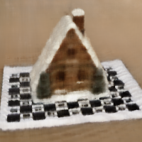
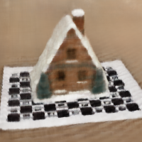
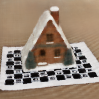
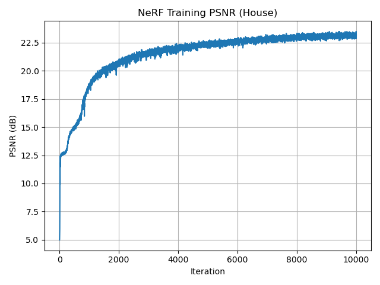
PSNR curve (10k iterations, extended schedule on the same architecture).
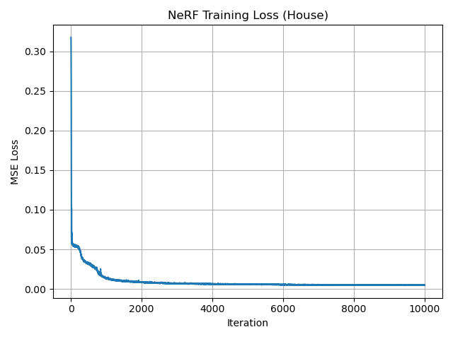
Loss curve for the 10k-iteration run.Held-out validation view at 10k iterations.
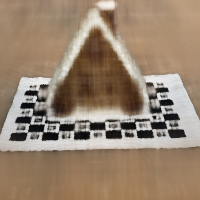
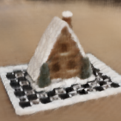
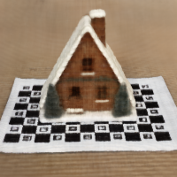
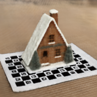
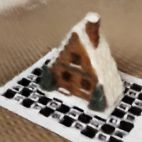
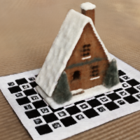
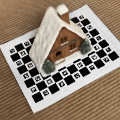
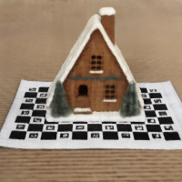
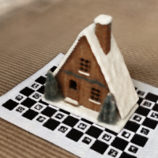
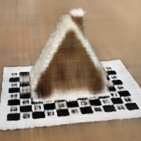
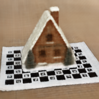
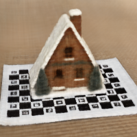
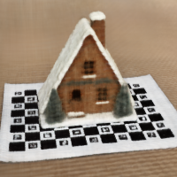
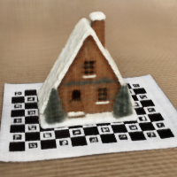
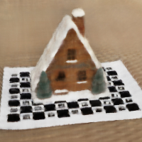
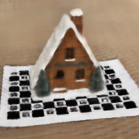
Early training snapshots of the ceramic house show a diffuse brown volume with only faint hints of structure; at
this stage the model has captured an average colour and rough depth range but has not yet aligned the geometry.
Between one and two thousand iterations the triangular roof, chimney, and square footprint become clearly
identifiable, and the high-contrast calibration board sharpens from a blurred patch into a checker pattern.
Subsequent iterations mainly refine edges, deepen shadows, and improve the separation between the house, board,
and background, reducing low-frequency bias in the carpet texture. By the final validation frame the roof
ridgeline is crisp, the board squares are well separated, and residual blur is confined to the finest details,
which is consistent with the 200×200 resolution and the chosen network capacity.
To evaluate generalisation beyond the training views, a synthetic orbit is generated by placing virtual cameras
on a circle whose radius matches the typical distance of the captured viewpoints. Each virtual camera is
oriented so that its optical axis passes through a point near the centre of the house while its vertical axis is
aligned with the scene’s up direction, producing a smooth sweep around the object at constant elevation. The
resulting novel views emphasise how the learned radiance field interpolates between the original poses: parallax
in the house silhouette and calibration board remains coherent, and specular highlights on the ceramic glaze
move consistently with viewpoint. Comparing orbits from the 5k and 10k runs shows that the longer schedule does
not alter the overall geometry but reduces shimmering artefacts and staircasing along high-contrast edges,
yielding cleaner motion and slightly sharper frames under the same rendering setup.
Orbit of the trained NeRF scene!!
Qualitatively, the renders at 6k and 8k iterations show the triangular peak and its shadow sharpening, the
edge between the board and the table becoming crisper, and the subtle grid pattern on the calibration board
becoming easier to discern.
By iteration 10k, the training view has noticeably fewer low-frequency artifacts and less noise in the
background, and the validation view reveals cleaner lines along the object’s silhouette while preserving the
same global appearance as in the shorter run.
Together, these comparisons indicate that five thousand iterations are sufficient to capture the overall shape
and color of the scene, while a longer schedule primarily refines small-scale structure and reduces residual
blur, yielding smoother textures and slightly higher PSNR at the cost of additional compute.


 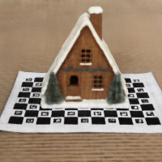
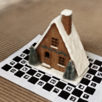
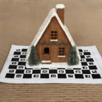
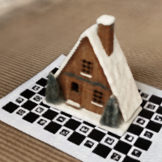